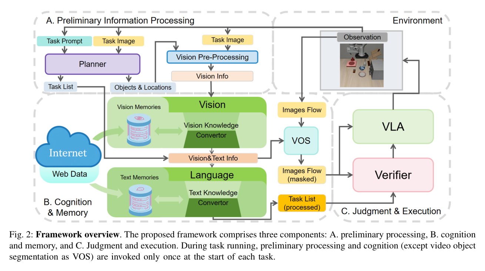
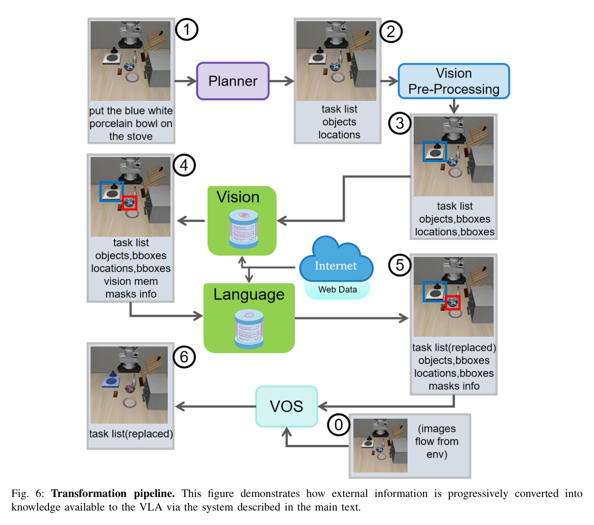
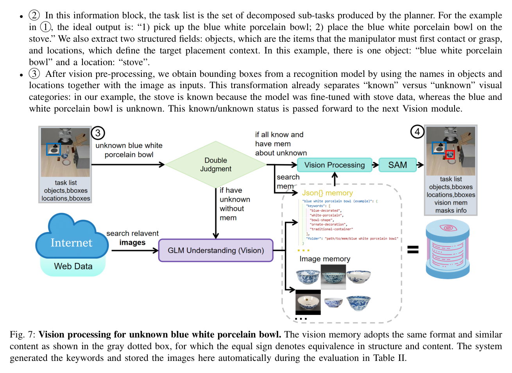
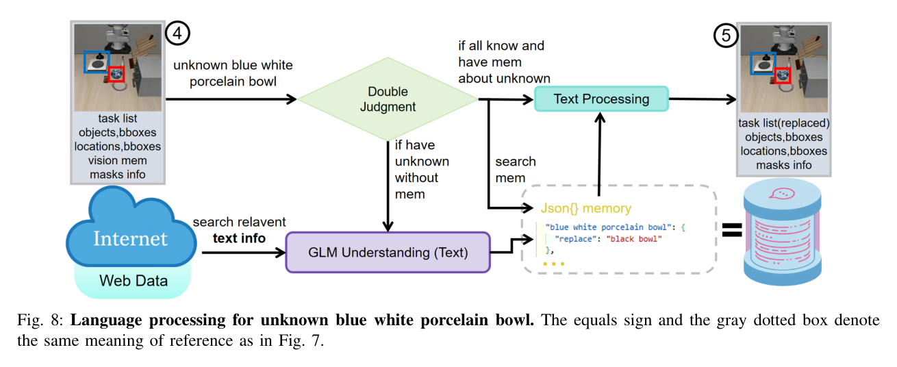
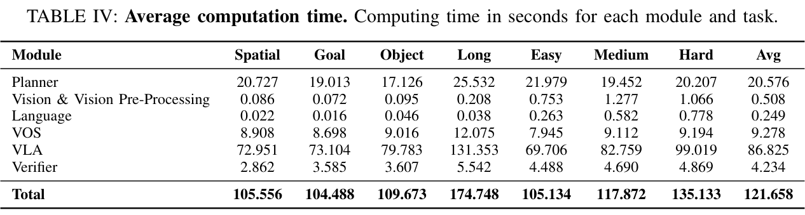
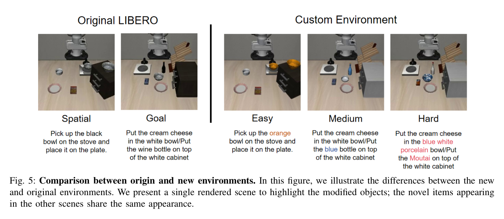
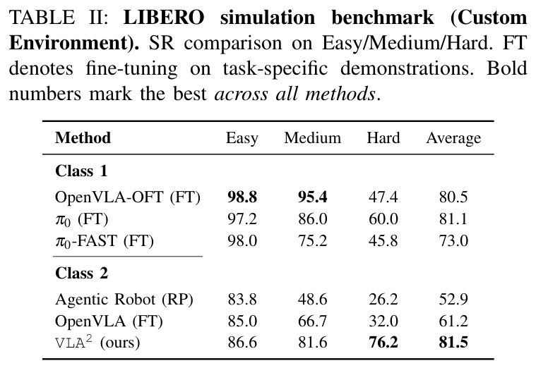
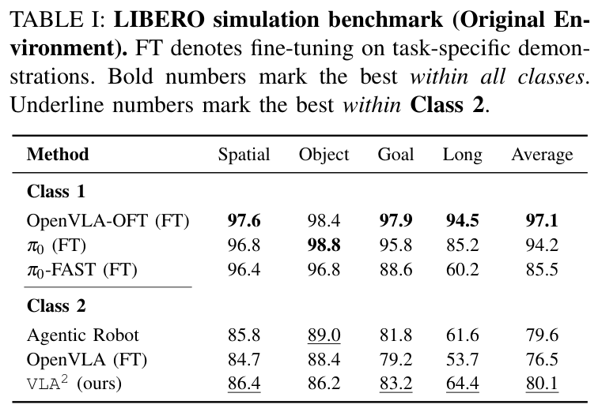
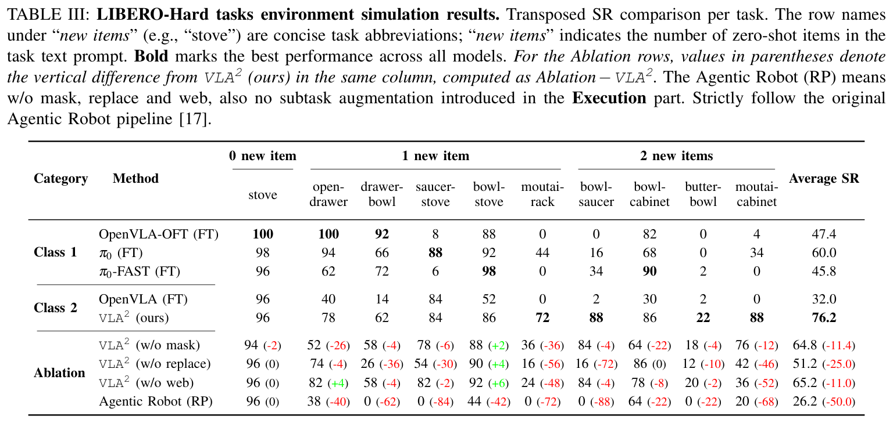

VLA²：机器人不认识“青花瓷碗”，能否先把它翻译成会操作的对象？
Han Zhao、Jiaxuan Zhang、Wenxuan Song、Pengxiang Ding、Donglin Wang · VLA²: Empowering Vision-Language-Action Models with an Agentic Framework for Unseen Concept Manipulation · arXiv:2510.14902v1，2025-10-16，18 页。整理于 2026-11-17。论文 · 官方项目页 · 核对的官方代码
让机器人“把青花瓷碗放到炉子上”，困难可能不在抓取运动，而在于它没有把“青花瓷碗”与画面中的物体关联起来。动作模型可能很熟悉黑碗，却对新纹理、新名称和品牌词失去定位能力。VLA² 的办法是先在模型外完成这次翻译：用搜索和视觉理解找到对象，用颜色掩码标明位置，再把陌生名称映射成动作模型熟悉的词。
这篇最值得关注的接口是：把未知概念转成“熟悉的对象类别＋明确的视觉区域”，让已有操作能力继续发挥作用。 它没有通过世界模型预测未来，也没有为新对象重新学习一套控制算法。完整系统包含任务规划、检索、检测分割、视频跟踪、词汇替换、动作执行和完成验证。
先说明证据范围：在作者自建 LIBERO-Hard 中，成功率从 OpenVLA 的 32.0% 提高到 76.2%，是 44.2 个百分点；实验只在仿真中完成，主要变化是对象外观与命名，不能外推为任意新物体、新动力学或真机任务的泛化能力。下面沿“青花瓷碗放炉子”的同一条样本，拆解系统与训练如何配合。
一、模型结构与方法定位：先解决“哪个物体”，再复用“怎么操作”
1.1 三层系统分别做什么？
看总图时，先区分左边任务开始时的处理和右边持续运行的执行环。规划、概念理解与词汇映射通常在任务开始时完成；之后保留视频掩码跟踪、动作输出和阶段验证。

上层 Planner 使用本地 GLM-4.1V-9B-Thinking，将完整任务拆成可执行子任务，并抽取物体与放置位置。中层用 MMGroundingDINO 定位、SAM2.1-L 分割；不认识时引入网页图片和描述帮助重新检测。语言模块把陌生词限制性地映射到已知词表。下层由经过专门微调的 OpenVLA 输出动作，Qwen2.5-VL-3B-Instruct 判断何时进入下一子任务。§III，PDF p.2–5
所谓 agentic 在这里主要是预先组织好的工具调用流程。它并不是一个完全自由选择工具、不断重写计划的通用智能体；作者也将流程较为固定列为限制。网页知识帮助恢复对象识别和命名，并不直接输出机器人动作。
1.2 同一条样本怎样穿过整个系统？
作者附录给出具体过程。青花瓷碗的名字最初不被正确识别，炉子则可以直接定位；补充概念信息后，碗也得到定位与掩码，最终图像和指令被共同改写。

这一过程可拆成五步：
- 从原始任务得到“拿起青花瓷碗”“把青花瓷碗放到炉子上”两个子任务。
- 检测器尝试用这些对象名称定位第一帧中的碗和炉子。
- 搜索和视觉理解提供属性描述，补全碗的定位；分割产生像素区域。
- 为碗和炉子分配颜色标记，将青花瓷碗映射到熟悉的 black bowl。
- OpenVLA 接收带透明掩码的当前图像，以及包含颜色提示、当前子任务和完整任务的文本。
例如附录把目标改写为 red-mask black bowl，把放置位置写成 blue-mask stove。black bowl 是执行词表中的代理名称，红色掩码才把它绑定到当前场景的具体实例。 如果只把名字替换成黑碗，而场景里恰好还有一个真正的黑碗，就可能造成歧义；文字和视觉必须同步。
二、核心机制：检索、颜色与词汇怎样把陌生输入变成可执行条件？
2.1 规划输出首先是一个有约束的数据接口
Planner 并不只输出自然语言解释。附录约束其生成编号子任务，每个子任务一个主要动作，并在专门的分隔格式中列出对象和位置。动作集合以 pick up、place、open、close、turn on/off 为主，避免把“寻找、靠近、抬高”等动作细节全部拆成独立步骤。
这让子任务粒度接近 VLA 已学会的行为：一次 pick up 应包含定位、接近、抓取与抬起。自然语言部分保留“柜子上层抽屉”等限定，供检测抽取的对象字段则倾向于柜子等主体。这样减少解析复杂度，但对象主体与局部部件之间的对应仍依赖后续模型正确处理。
输出还要经过提取、错误检测、重新生成和任务相关的硬编码兜底。附录描述第一次失败重试，第二次失败后采用兜底或中止。这个机制能保证接口更容易解析，不能保证每个生成计划在语义或物理上正确。评估涉及任务相关兜底，因此迁移到新任务时也需要核对规则覆盖范围。
2.2 不认识青花瓷碗时，搜索结果如何进入视觉检测？
视觉模块检查对象是否已有有效 bbox，以及辅助关键词是否可用；缺少相关信息时触发检索。bbid 下载对应词的网页图片，组成 2×3 拼图，GLM 结合当前场景与参考拼图生成五个简短属性词，例如颜色、形状、材质和用途。原名称加这些属性重新送给检测器。
下面图中的检索分支产生的是描述与记忆，然后返回检测路径；不是把网络图片直接作为机器人正在看到的场景。

属性词把一个陌生专名拆成视觉模型更可能识别的基础特征。这是作者所说 instant learning 的实际落点：调用已有知识并写入外部记忆，不是现场梯度更新 GLM 或 OpenVLA 的参数。记忆保存关键词、图片及拼图等，之后遇到相关词可复用。
如果补充描述后仍检测失败，框为空，该对象不叠加掩码。系统存在失败出口，而不是无条件宣称找到了目标。网页参考图与仿真视角不一致、同名物体外观多样或初始检测框错位，都可能让错误传递到后续分割；这一瓶颈在实验中确实出现。
2.3 透明掩码不是删除背景，而是增加对象绑定信号
SAM2.1-L 把检测框转换成实例区域，物体与放置位置使用不同的颜色调色板。随后 Cutie 做视频对象分割，把初始化的实例及颜色关系传播到后续帧。这样既减弱对原始纹理的依赖，又给文字中的颜色标记一个明确的像素对应。
固定提交的 main_agent_clean.py 在每帧调用 track_frame_and_overlay(..., alpha=0.3)。透明叠加保留了原始图像信息；不能把它解释成只保留目标、把背景全部抹黑。第一帧识别错误可能被跟踪持续传播，跟踪也可能在遮挡后漂移，因此颜色并不自动等价于正确对象身份。官方执行循环
从学习角度看，掩码为动作模型增加了相对稳定的目标定位条件。模型可以更多依赖区域位置和几何关系，减少对青花纹理、品牌标签等不稳定外观的依赖。不过，透明叠加也可能削弱精细边缘与接触线索；是否适用于精密插接，需要另外验证。
2.4 语言替换受到已知词表约束，不能任意发明标签
KnownList 在 OpenVLA 微调时用 NLTK 的分词和词性标注，从训练文本提取对象词并保存为 JSON。推理时先检查词是否已知；未知词交给 GLM，结合场景裁图、检测分数、参考拼图、关键词、允许词表和外部文本描述选择替代项。

附录给出的输出约束很明确：只能返回允许词表中的一个原样标签，或者 NONE。合法映射才写入文本记忆；没有可靠替代项就不替换。这比要求模型“随便描述成常见物体”更可控，但词表合法只意味着格式与候选约束通过，并不保证替代的操作语义正确。
例如把陌生品牌瓶映射为熟悉的酒瓶，可能保留抓取和放置行为；把一个有特殊开盖机构的容器也映射为普通瓶，则未必保留操作方式。本文实验主要保持原有任务结构和近似交互条件，所以这种语义压缩较容易有效。它没有证明映射能处理全新的操作机制。
2.5 为什么指令同时包含当前子任务与全局任务？
VLA 使用的输入模板是 now do {sub}, the whole task is {full}，代码在 script/mmgdino_simple.py 的任务列表处理函数中可见。当前子任务告诉模型现在处于哪一阶段，完整任务保留对象间关系和最终目标。
仅把一个完整示范指令拆短，可能制造新的语言分布：训练时熟悉“把碗放上炉子”，部署时突然只收到“拿起碗”。作者因此在数据准备和微调阶段也生成相同的阶段式文本。收益来自训练与执行接口一起改造，不能归结为部署时多加一句 prompt。 执行数据与模板，§III-C
三、训练与推理：哪些模块学了什么，哪些部分没有梯度？
3.1 三组微调分别对齐检测、验证和动作
| 模块 | 数据和监督 | 作用与公开范围 |
|---|---|---|
| MMGroundingDINO | 四个原始 LIBERO 套件随机渲染的 500 张图，人工标注框与名称，再做增强 | 适配仿真对象定位；2 张 A100-80GB；论文写 100 episodes，未明确完整优化调度 |
| Qwen2.5-VL-3B-Instruct verifier | 从 LIBERO 视频提取片段，配当前子任务、完成与是否推进阶段的标注 | 学习阶段判定；4 张 A100-80GB，LLaMA-Factory 默认 qwen2-sft 配方基础上增加训练轮次；绝对数据量与完整参数不足 |
| OpenVLA executor | 带透明掩码的视频、分阶段并带全局上下文的指令、原示范动作 | 学会使用新条件输出动作；论文报告学习率 3×10⁻⁴，8 张 A100-80GB |
GLM、检索、SAM 和 Cutie 在系统中提供规划、表征转换与跟踪。论文没有描述一个让动作损失反向穿过网页检索、检测、分割和语言替换的联合可微目标。因此应理解为模块化训练与运行组合，而不是整套 agent 端到端共同优化。
3.2 同一条示范怎样变成动作训练样本？
原示范包含图像、任务描述和动作标签。作者使用与部署一致的视觉及语言流程，生成目标掩码、阶段任务列表和颜色词。每个训练时刻使用对应的阶段文本，动作标签仍来自示范。训练要求 OpenVLA 在处理过的视觉与语言条件下预测动作。
官方 vla-scripts/finetune.py 调用模型的 output.loss 并反向传播；脚本还计算动作 token 准确率和解码动作 L1 指标，后者在这条代码路径中用于记录，不能被写成额外加入训练的连续动作回归损失。主体仍沿用 OpenVLA 的动作 token 监督，不是新设计的 flow matching 目标。固定提交训练脚本
这样改变了条件输入，而没有改变要完成的示范动作。其预期效果是让视觉目标区域、熟悉对象词和相应控制行为建立联系。若训练阶段不加入掩码和颜色词，只在推理时突然叠加，输入分布就发生了变化；论文并没有证明这种免微调方式能得到同样收益。
这里也要保留复现边界：论文说明进行了时间分段提示构造，但没有充分交代每条示范中子任务边界的完整标注和对齐规则。阶段标签错位会直接把正确动作配给错误子任务，这项数据工程不能省略。
3.3 论文训练设置与代码默认值并不完全相同
检查的提交是 d9e76bbd2bd95ca4389ab2274d160b047ccbf28e。公开微调脚本默认学习率为 5×10⁻⁴、batch_size=16，默认启用 rank=32 的 LoRA，而论文写的是 3×10⁻⁴。CLI 可以覆盖这些默认参数，因此差异不自动意味着论文错误；但没有完整的运行配置时，也不能把脚本默认值拼成论文主实验配方。
同样，论文中检测器“100 episodes”的措辞不够精确，不能自行改写成确认的 100 epochs。训练步数、全部组件权重版本、完整数据构造配置与测试时记忆状态，都需要作为复现材料固定下来。当前文章做的是静态核对，没有运行模型训练或成绩复现。
3.4 验证器与恢复机制怎样影响闭环？
验证器输入当前子任务和图像/视频流，判断是否完成，完成后推进下一子任务。主循环默认每 20 步验证一次；每 10 步向队列加入一对主视角和腕部图像，验证最多使用 10 对。这个步数是代码调度单位，不能直接换算成固定秒数。执行循环与 verifier 调用
如果末端陷入卡住或异常状态，论文描述使用动态阈值检测，并切换为抬起夹爪的恢复指令，等待 10 步后恢复原子任务。这能打断局部停滞，但恢复动作不是经过通用安全或最优性证明的控制策略。
附录 verifier prompt 有一个值得关注的边界：部分问题询问目标物体“或其他东西”是否被拿起、放置或打开。这更接近行为阶段检测，不是严格的对象身份核验。动作阶段看起来完成，不代表目标物体一定正确。这个风险来自 prompt 内容分析，论文没有单独量化它导致的错误率。
另外，代码在 verifier 认为全部子任务完成后，仍可继续最后子任务直到环境结束或步数上限。因此 verifier 决定阶段推进，不能把其 Yes 输出直接当成实验最终成功标签。
3.5 记忆与计算部署：冷启动不能按缓存平均值估算
ID 数据准备阶段已经建立部分视觉和文本记忆；论文说明 OOD 相关记忆在每次验证运行前重置。首次检索后形成的映射可以在后续调用复用。“无需针对新概念微调”成立的前提是依赖在线工具与外部记忆；不是完全不接触新概念信息。
公开仓库因依赖版本冲突使用两个环境，通过 socket 连接执行与视觉规划服务。此工程划分方便复用模型，但跨进程通信与多个视觉语言模型都会增加部署成本；它没有把所有模块压成一个轻量策略。
下面表格统计的是每任务各模块累计计算时间，不是一次动作推理延迟。

总平均为 121.658 秒，其中 Planner 20.576 秒、VLA 86.825 秒、VOS 9.278 秒、Verifier 4.234 秒。作者将新增视觉、语言、VOS 部分相加得到平均 10.035 秒额外开销。视觉和语言模块的表中均值很低，但附录同时说明首次理解可接近约 20 秒，缓存复用后才很快。
所以不能把表中 0.508 秒当成陌生对象首次识别延迟，也不能把 121.658 秒等同于真实机器人完成任务所需的物理运动时间。对我们的部署，冷启动、缓存命中和控制循环关键路径需要分别计时。
四、实验结果：陌生概念泛化改善有多大，哪些因素真正起作用？
4.1 先看“新环境”究竟改了什么
作者在 LIBERO 中构造 Easy、Medium、Hard。Easy 主要把黑碗改为橙色；Medium 引入白碗、蓝瓶、白柜；Hard 加入茅台外观与名称、青花瓷碗、butter 等。动作任务结构基本保留，外观和语言变化是主要变量，butter 与原对象的碰撞模型近似。

这组设计很适合检验“原有动作能力能否跨过对象识别与命名障碍”。它没有系统检验新形状带来的抓取几何变化、新重量摩擦、新关节结构或未见机器人。论文中的 zero-shot 主要指没有针对这些 OOD 变化再做动作模型微调，不意味着基座、检测器或执行器从未在 LIBERO 上训练。
4.2 Hard 提升最大，但平均优势要按正确口径看
各任务评估 50 次。自建 Hard 表中包含 10 个任务，因此对应 500 次任务执行。先比较完整系统与单独模型，再讨论额外训练和工具预算。

Hard 上 VLA² 为 76.2%，OpenVLA 为 32.0%，差 44.2 个百分点；π0 为 60.0%，差 16.2 个百分点；OpenVLA-OFT 为 47.4%，差 28.8 个百分点。不能把这些百分点写成相对百分比增长。
三难度平均，VLA² 为 81.5%，π0 为 81.1%，OpenVLA-OFT 为 80.5%，领先幅度明显小于 Hard。Easy 和 Medium 上，更强的单模型仍领先。论文摘要写较 OpenVLA 平均提高 20.2%，而按表中已四舍五入的 81.5 与 61.2 相减是 20.3 个百分点；应保留这个口径差异，不能把它描述成一个精确、无歧义的相对增幅。
VLA² 使用额外检测/验证数据、外部检索和多模型推理，OpenVLA 则使用不同条件下微调的数据。它们是完整系统能力比较，不能把 44.2 个百分点全部归因于在线搜索，也不能推导成同等算力下策略架构更优。
4.3 原始环境不是“每一项都没有下降”
原始 LIBERO 上，应先看同为 OpenVLA 的 Class 2 对照。

VLA² 平均 80.1%，优于 OpenVLA 的 76.5% 和 Agentic Robot 的 79.6%。但 Object 套件 VLA² 为 86.2%，低于 OpenVLA 的 88.4%。作者正文将其归因于 224×224 观测下细粒度识别困难、框漏检或错定位，以及网页图像与仿真视角差异。
因此摘要中的“不降低域内性能”只能按整体平均理解，不能推广为所有套件无退化。而 Class 1 的 OpenVLA-OFT 平均 97.1%，仍远高于 80.1%，所以论文也没有证明完整 agent 普遍优于更强的执行策略。
4.4 消融告诉我们：词汇替换比“加搜索”更关键
下表把 Hard 的不同任务与三个主要模块消融放在一起。注意每列最多 50 次试验，单任务 2 个百分点就是一次成败变化；没有置信区间时，不宜过度解释很小的差值。

关闭 mask 后平均从 76.2% 到 64.8%，下降 11.4 个百分点；关闭 replace 降到 51.2%，下降 25.0 个百分点；关闭 web 降到 65.2%，下降 11.0 个百分点。在这组设置中，把陌生名称映射到执行器熟悉的词，是最明显的单项收益来源。
例如 bowl-saucer 去替换后从 88% 降至 16%，说明仅靠区域标记还不足以跨过语言分布变化。moutai-rack 去 web 后从 72% 降至 24%，则说明陌生品牌的视觉/语言解析特别受益于外部知识。两者解决的是不同接口，不是互相替代。
但 w/o web 同时关闭图像检索、文本检索及检索记忆复用，不能把 11.0 个百分点单独归给某个搜索 API。Agentic Robot (RP) 还同时去掉掩码、替换、检索与阶段式 prompt 增强，是多项改变的组合对照，不能用其 26.2% 成功率证明某一个模块独立贡献了 50 个百分点。
系统也保留明确失败：butter-bowl 完整版本只有 22%。作者指出低分辨率下物体视觉歧义难以消除，检索与替换都无法可靠补救。这说明“识别出熟悉代理概念”仍然依赖足够的场景证据，工具数量增加不保证目标可辨认。
总结：对 XR1，最值得迁移的是目标区域与执行语义的联合接口
VLA² 的核心不是重新训练一个更大的动作模型，而是用外部工具把陌生概念定位到当前画面，再转成经过训练的执行条件。它把“认出目标”和“控制机器人”之间原本隐含的关联，变成可缓存、可检查的掩码与词汇映射。对外观、名称改变但操作方式类似的对象，这种分工有很直接的作用。
以下是 XR1 迁移建议，尚未实施或验证。 可以先只研究目标区域条件：用稳定的目标 mask 或框，加当前阶段与完整任务文本，保持示范动作标签不变，在后训练中让策略学会使用这些信息。先用人工或可靠标注得到的目标区域测上限，再替换成检测/跟踪结果。这样能区分“动作模型不会用区域”与“上游定位不准”。
第二步再评估陌生名称归一化。原始名称、执行代理词、对象实例 ID 和证据应分别保存，避免替换后丢失真实任务含义。对于相同操作类别但新品牌的物体，可以借鉴词表约束；涉及精确材质、尺寸、特殊机构或风险要求时，不能默认熟悉代理词保留了全部操作条件。
第三步才接入检索和缓存。把搜索结果、模型版本、映射来源与缓存状态记录下来，按冷启动和缓存命中分别评估；同时验证错误搜索、检测漂移和 verifier 错判时能否及时停止或重新定位。这些是让模块化方法成为可复现系统所需的接口，不是原论文已经解决的生产能力。
它对我们 UMI 与真机混训的帮助主要在视觉和语言条件：把来源间不同的外观、命名映射到较一致的目标表达。它不解决动作噪声、坐标系、时延或控制频率对齐，也不能替代世界模型的未来预测。 与前面 CoAWM 的时间动作表示、JevVLA 的动作评估属于不同层次，可以分别评估，而不应未经对照就同时堆叠。
总体判断：这是一个值得借鉴的后训练与执行系统方案，证据最强的范围是作者构造的仿真外观/概念偏移；真机、全新操作机制、实时性和通用自主规划仍未得到充分验证。
来源与代码定位
方法与训练来自论文 §III–IV，结果来自 Tables I–III，计算成本来自附录 Table IV，具体提示与转换样本来自 PDF p.9–18。原图表版权归论文作者；正文、机制解释与迁移建议为原创整理。代码只做静态阅读，固定于 d9e76bbd2bd95ca4389ab2274d160b047ccbf28e，未运行训练、推理或独立复现成功率。
Markdown 正文 · 来源映射 · 图表清单 · 官方执行循环 · 官方训练脚本